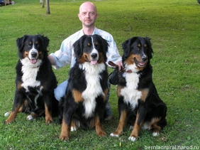

<table border="0" class="layout">
    <colgroup span="1"><col width="15%" span="1"></col><col width="25%" span="1"></col><col width="60%" span="1"></col></colgroup> 
    <tbody>
        <tr>
            <td valign="top">
                <div class="holster">
                    <div class="block_container s3 b-text b-static-text user_css_12816005438 " id="e_127779555847">
                        <p><em><strong>Малкина Алла Константиновна</strong></em></p>
                        <p><em><strong>питомник "<a href="http://www.berniadmiral.narod.ru/">ГОРДОСТЬ АДМИРАЛТЕЙСТВА"</a></strong></em></p>
                        <p><em><strong><br /></strong></em></p>
                        <p><strong>Старостина Татьяна</strong></p>
                        <p><strong>питомник "<a href="http://www.kennelmosstar.com/">МОССТАР</a>"</strong></p>
                        <p> </p>
                        <p><br /><strong>Заходите к нам в гости</strong></p>
                    </div>
                    <div class="block_container s3 b-image txt-center" id="e_1282665454693"><span></span></div>
                </div>
            </td>
            <td>
                <div class="holster">
                    <div class="block_container s3 b-text b-static-text user_css_12816005438" id="e_128264319056">
                        <p style="text-align: center;"><span style="color: #3366ff;"><strong><span style="color: #3366ff;">Бернский зенненхунд</span></strong></span></p>
                        <p style="text-align: justify;"><span style="color: #3366ff;"><strong>Из истории породы:</strong> из четырёх существующих сегодня пород альпийских пастушьих собак (зенненхундов) наиболее популярна бернская пастушья, или бернский зенненхунд. Он был выведен в швейцарском кантоне Берн как упряжное животное, возившее тележки сыроваров и ткачей. Возможно, предки бернского зенненхунда попали в Швейцарию в качестве сторожевых собак вместе с римскими легионами, а после падения римского владычества остались там и были скрещены с местными овчарками. В результате получились четыре альпийские пастушьи собаки: бернская пастушья собака (бернский зенненхунд), большой зенненхунд, аппенцеллер-зенненхунд и энтлебух-зенненхунд. В 19 веке бернскому зенненхунду грозило исчезновение, но былую славу ему вернул созданный в 1907 году в Швейцарии клуб любителей этой породы. В США она появилась через 30 лет, а в России в конце 1980-х гг. </span></p>
                        <p style="text-align: justify;"><span style="color: #3366ff;"><strong>Общая характеристика породы:</strong> на родине её используют и как упряжную собаку, и как компаньона, но в других странах она стала популярным домашним питомцем и прекрасной выставочной собакой, легко поддающейся дрессировке, не смотря на внушительные размеры и силу. Это послушная, преданная собака, уступчивая по отношению к другим животным и окружающим людям. И очень красивое животное, уверенное в себе и весёлое. <br /></span></p>
                        <p style="text-align: justify;"><span style="color: #3366ff;"><strong>Размеры: </strong>62-68 см (кобели), 58-62 см (суки). <br /><a href="http://smayliki.ru/smilie-811550055.html" target="_blank"></a></span></p>
                        <p> </p>
                        <p> </p>
                        <p> </p>
                        <p style="text-align: justify;"><span style="color: #0000ff;">_____________________________________</span></p>
                        <p style="text-align: justify;"><a href="http://www.dog.blister.ru/"><span style="color: #0000ff;">&nbsp;</span></a></p>
                        <p style="text-align: justify;"><span style="color: #0000ff;">&nbsp;</span></p>
                        <p style="text-align: justify;"><span style="color: #0000ff;">&nbsp;</span></p>
                        <p style="text-align: justify;"><span style="color: #0000ff;">&nbsp;</span></p>
                        <p style="text-align: justify;"><span style="color: #0000ff;">&nbsp;</span></p>
                        <p style="text-align: justify;"><span style="color: #0000ff;">&nbsp;</span></p>
                    </div>
                </div>
            </td>
        </tr>
        <tr>
            <td></td>
            <td></td>
        </tr>
    </tbody>
</table>​
